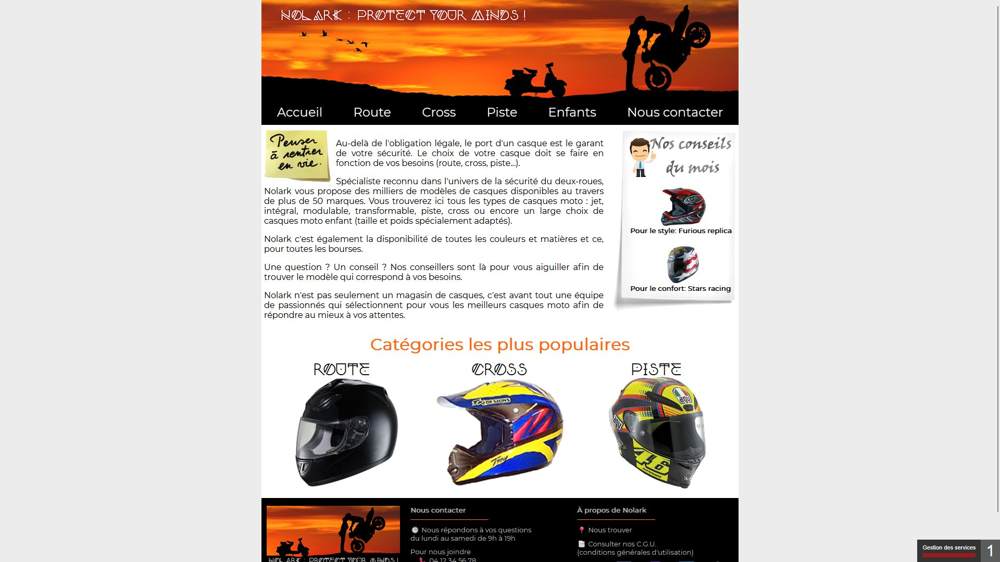
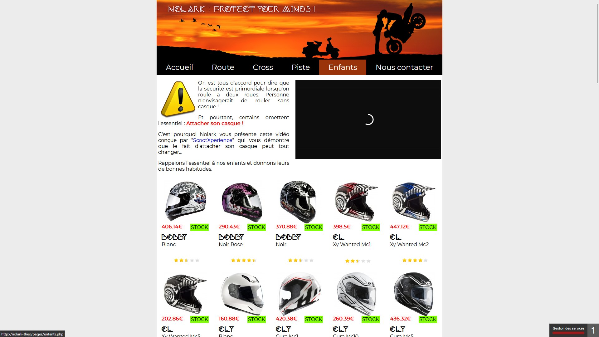
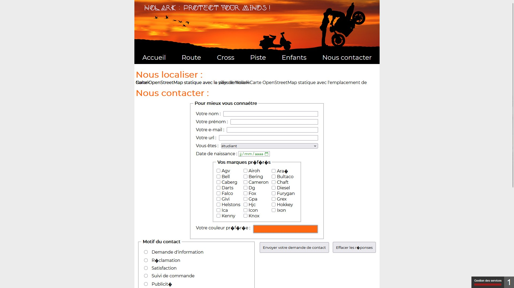

HTML · CSS · PHP · SQL (MySQL)
Site vitrine dynamique pour un magasin fictif de casques moto, développé en PHP avec accès à une base de données MySQL.
Nolark est un projet de première année de BTS SIO réalisé en autonomie et guidé par notre enseignant. L’objectif était de partir d’un site statique existant — une vitrine pour un vendeur de casques moto — et de le rendre entièrement dynamique en le connectant à une base de données MySQL.
Le site propose plusieurs catégories de casques (Route, Cross, Piste, Enfants), chacune affichant les produits correspondants récupérés depuis la base de données. Une page de contact avec formulaire complet permet aux visiteurs d’envoyer une demande, de sélectionner leurs marques préférées parmi une cinquantaine de références, et de choisir leur couleur favorite via un color picker. Ce projet d’introduction aux technologies web dynamiques m’a donné les bases essentielles en PHP et SQL que j’utilise encore aujourd’hui.

Page d’accueil : présentation, catégories et conseils du mois

Page catégorie Enfants : affichage dynamique des produits depuis la BDD

Page contact : formulaire complet avec sélection de marques et color picker